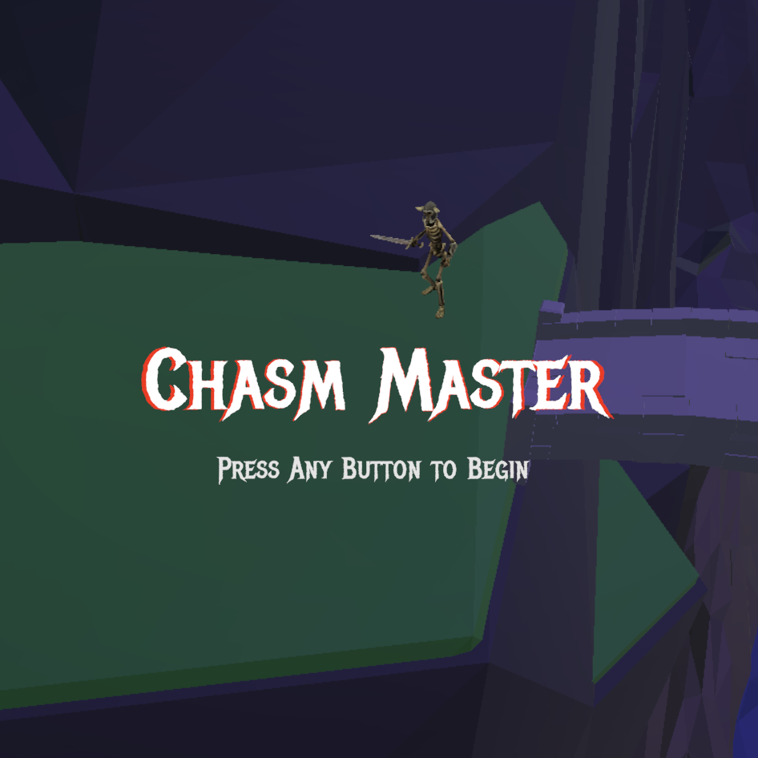

CHASM MASTER
Networked Unity Puzzle Game
About the Project
Chasm Master is a networked Unity puzzle game inspired by the "Bridge of Death" scene from Monty Python and the Holy Grail. It uses a Node.js and TypeScript backend with a MongoDB database of curated riddles and answers.
The game uses natural language processing and semantic validation to evaluate player responses by meaning rather than exact phrasing. Early prototypes explored AI-generated riddles, but I redesigned the system around semantic validation to improve reliability and give designers tighter control over the content.
The Unity code and backend code are both public.